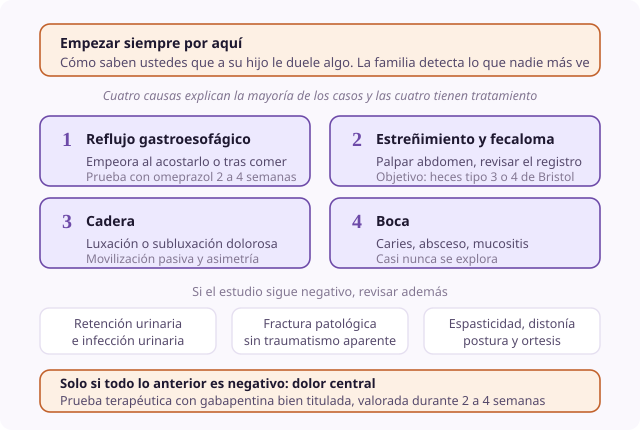

Ficha de síntoma
Dolor en el niño sin lenguaje
- Dominio
- Dolor
- Nivel
- Avanzado
- Edades
- Niño con discapacidad grave
El niño con parálisis cerebral grave o con discapacidad intelectual profunda es el paciente que más dolor tiene y menos analgesia recibe de toda la pediatría. No puede decirlo, sus señales se atribuyen a su condición de base y su dolor tiene causas que no son las que se buscan primero.
Por qué ocurre
El dolor existe igual, pero la vía de expresión está alterada. Además la puntuación basal de cualquier escala observacional ya es alta cuando el niño está bien, así que solo el cambio respecto de su estado habitual informa. Y muchas de sus causas de dolor son crónicas y silentes: Reflujo, estreñimiento, luxación de cadera.
Causas
- Reflujo gastroesofágico y esofagitis, que es la causa más frecuente e infradiagnosticada
- Estreñimiento y fecaloma
- Espasticidad, distonía y espasmos musculares
- Luxación o subluxación de cadera, muy frecuente y muy dolorosa
- Fractura patológica por osteoporosis, a veces sin traumatismo aparente
- Retención urinaria e infección del tracto urinario
- Dolor dental y caries, que casi nunca se explora
- Úlceras por presión y dermatitis del pañal
- Dolor central o tormenta neurovegetativa, un diagnóstico de exclusión
Qué evaluar
- Empezar siempre por la familia: Cómo saben ustedes que le duele algo. Esa información es la más fiable de todas
- Usar la r-FLACC individualizada con las conductas propias del niño anotadas por sus padres
- Establecer y registrar la puntuación basal cuando el niño está bien, porque casi nunca es cero
- Recorrer una lista sistemática de causas de la cabeza a los pies, sin saltarse la boca ni el pañal
- Explorar caderas, buscar dolor a la movilización pasiva y asimetría
- Considerar una prueba terapéutica secuencial cuando el estudio es negativo: Primero antirreflujo, después laxante, después analgesia, y valorar cada una durante 2 semanas
Manejo no farmacológico
- Revisar la postura y el sistema de sedestación, que es causa frecuente de dolor y de úlceras
- Ajustar férulas, corsés y ortesis, y comprobar que no rozan
- Movilizaciones lentas y anunciadas, nunca bruscas
- Cuidado sistemático de la boca y revisión odontológica periódica
- Regular el ambiente: Ruido, luz y temperatura, que en muchos de estos niños desencadenan crisis
Manejo farmacológico
- Omeprazol
- 0.7 a 1.4 mg/kg/día VO en ayunas. Prueba terapéutica de 2 a 4 semanas ante irritabilidad sin causa clara.
- Polietilenglicol
- 0.4 a 0.8 g/kg/día VO, ajustando a heces de tipo 3 o 4. Estreñimiento, que es causa y agravante constante.
- Gabapentina
- Inicio 5 mg/kg VO nocturno, subiendo a 10 a 20 mg/kg cada 8 h. Irritabilidad y dolor central persistente. Es la intervención con mejor rendimiento en esta población.
- Baclofeno o diazepam
- Según pauta de neurología. Componente de espasticidad o de espasmo doloroso.
- Paracetamol y morfina
- Dosis habituales por peso. Dolor confirmado o prueba analgésica estructurada.
Cuándo escalar
Ante un cambio brusco e inexplicable del patrón habitual, hay que buscar una causa aguda: Fractura, abdomen agudo, torsión testicular, cuerpo extraño corneal. Si tras un estudio sistemático y tres pruebas terapéuticas no hay control, consultar con un equipo especializado.
Qué decir a la familia
Ustedes son quienes mejor lo conocen y quienes primero notan que algo le pasa. Cuéntennos qué hace distinto cuando le duele, porque eso nos sirve más que cualquier prueba.
Qué evitar
- Atribuir la irritabilidad a su condición de base sin haber buscado una causa
- Usar la FLACC estándar en lugar de la versión revisada e individualizada
- Comparar con una puntuación de cero en lugar de con su basal
- No explorar la boca, las caderas y el pañal
- Descartar el dolor porque el niño no llora: Muchos de estos niños expresan el dolor con quietud y no con agitación
- Sedar la conducta sin haber buscado la causa del malestar
Perla clínica
Antes de concluir que un niño con encefalopatía llora por su enfermedad, hay que haber descartado reflujo, estreñimiento, cadera y boca. Esas cuatro causas explican la mayoría de los casos y las cuatro tienen tratamiento.

discapacidad r-FLACC reflujo infratratamiento prueba terapéutica